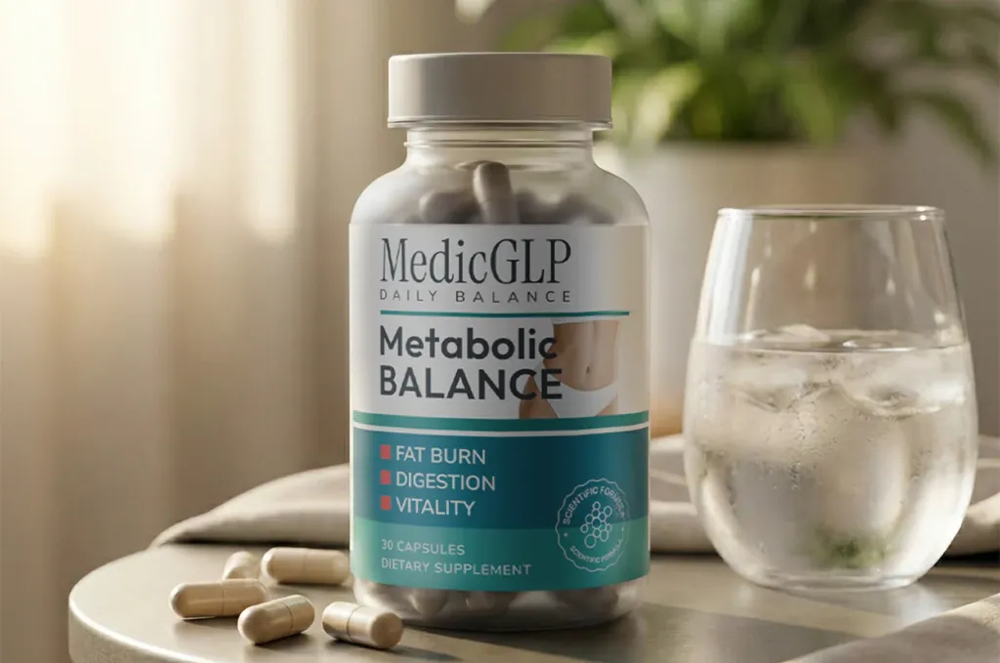

5 kritische Fehler, die Ihren Stoffwechsel ab 40 "eingefroren" halten (Und der zelluläre Enzym-Schalter, der die Fettverbrennung im Ruhezustand endlich wieder aktiviert)
Wenn Sie Ihren 40. Geburtstag gefeiert haben und bemerken, dass Ihr Körper nicht mehr so auf Diät und Bewegung reagiert wie früher, bilden Sie sich das nicht ein.
In Ihren 20ern und frühen 30ern war es relativ vorhersehbar, in Form zu kommen: Sie haben zehn Tage lang auf den Nachtisch verzichtet, sind etwas mehr gelaufen, haben das Essen vom Lieferservice am Wochenende reduziert – und die Kilos purzelten sofort.
Und heute? Sie können 1.200 Kalorien aus gegrilltem Hähnchen und Salat essen, täglich 10.000 Schritte absolvieren und komplett auf Wein verzichten – und die Badezimmerwaage weigert sich stur, sich auch nur einen einzigen Millimeter nach unten zu bewegen.
Die meisten Ärzte und alltäglichen Fitness-Influencer werden Ihnen denselben oberflächlichen Rat geben: "Essen Sie einfach weniger, bewegen Sie sich mehr und akzeptieren Sie, dass sich der Stoffwechsel im Alter verlangsamt."
Dieser Rat ist biologisch grundlegend falsch.
Der Grund, warum Ihr Gewicht nicht sinkt, liegt nicht darin, dass Sie sich noch mehr hungern oder eine weitere Stunde auf dem Laufband verbringen müssen. Der wahre Übeltäter ist eine unsichtbare zelluläre Stilllegung tief in Ihrem Gewebe: die Deaktivierung Ihres Hauptstoffwechselenzyms AMPK, kombiniert mit einem altersbedingten Rückgang der natürlichen Sättigungssignale im Darm (GLP-1).
Hier sind die 5 fatalen Fehler, die Männer und Frauen über 40 machen, wenn sie versuchen, einen ins Stocken geratenen Stoffwechsel neu zu starten – und die klinisch dokumentierte pflanzliche Synergie, die den zellulären Energieverbrauch reaktiviert und die ganztägige Vitalität ohne Kaffeezittern wiederherstellt.
Kalorien weit unter den Grundumsatz senken (Erzwingen von "zellulärem Winterschlaf")
Wenn die Waage mit 42, 48 oder 55 Jahren stehen bleibt, ist der automatische Impuls, die Kalorien noch weiter zu kürzen: von 1.800 auf 1.500 und schließlich auf 1.200 Kalorien pro Tag.
In der Biologie der Lebensmitte geht dieser Schuss dramatisch nach hinten los:
- Adaptive Thermogenese: Ihre Schilddrüse und die mitochondriale Energieabgabe drosseln sofort ihre Aktivität. Wenn Ihre Zellen in einer Phase natürlicher hormoneller Veränderungen ein extremes Kaloriendefizit spüren, behandeln sie dies als existenzielle Hungersnot.
- Das "Starved Engine"-Paradoxon: Anstatt gespeichertes Körperfett zu verbrennen, verlangsamen Ihre Zellen den Ruheenergieverbrauch auf ein absolutes Minimum.
- Schwere Diät-Erschöpfung: Sie fühlen sich ausgelaugt, schwach y frieren leicht, während tief sitzendes viszerales Fett fest verankert bleibt.
Das Kappen der Nahrungszufuhr ohne Anpassung der zellulären Maschinerie hungert lediglich Ihr Gewebe aus. Was ein reifer Stoffwechsel braucht, ist keine tiefere Einschränkung, sondern ein biochemisches Signal, das den ruhenden Zellen befiehlt, gespeicherte Lipide freizugeben und als Brennstoff zu oxidieren.
Sich auf hochdosiertes Koffein und kommerzielle "Fatburner" verlassen
Wenn sich Trägheit breitmacht, greifen viele Erwachsene über 40 verstärkt zu Nachmittags-Espressos, Energy-Drinks oder kommerziellen thermogenen Fatburner-Pillen.
Während hochkonzentrierte Stimulanzien Ihr zentrales Nervensystem für ein oder zwei Stunden künstlich anregen können, verursachen sie in einem reiferen Körper schwere metabolische Schäden:
- Der Zyklus aus Unruhe & Angstgefühlen: Die Überstimulation alternder Nebennierenpfade überschwemmt Ihren Blutkreislauf mit Stresshormonen, was zu nervöser Unruhe und erhöhtem Ruhepuls führt.
- Magen-Darm-Reizungen & gestörter Schlaf: Aggressive synthetische Stimulanzien stören die Verdauung und sabotieren den tiefen, erholsamen Schlaf – genau das Zeitfenster, in dem sich die Stoffwechselhormone regenerieren.
- Der unvermeidliche Energieabsturz: Auf synthetische Stimulanzien-Highs folgen immer steile Dopamin- und Energieabfälle, die Sie direkt in die Küche auf der Suche nach schnellen Kohlenhydraten treiben.
Echte, nachhaltige Vitalität während einer Gewichtsmanagement-Routine sollte niemals durch Erschütterungen des zentralen Nervensystems entstehen. Sie erfordert eine reine Mikronährstoffunterstützung – wie Vitamin B12 –, die zu einem normalen Energiestoffwechsel beiträgt, das Nervensystem unterstützt und Müdigkeit sowie Diät-Erschöpfung von innen heraus natürlich reduziert.
Den zellulären "Hauptschalter" ignorieren (AMPK-Inaktivität)
Warum konnten Sie mit 25 mühelos eine ganze Pizza verbrennen, während mit 48 schon eine einzige Scheibe Toast an Ihrer Taillenumfang ansetzt?
Die Antwort liegt in einem intrazellulären Enzym namens AMPK (Adenosinmonophosphat-aktivierte Proteinkinase).
In der Jugend wirkt AMPK wie ein hochsensibler Energiesensor. Wenn Sie essen, befiehlt es Ihren Zellen rasch, Glucose aufzunehmen, die Insulinsensitivität zu optimieren und überschüssige Kalorien als reine Stoffwechselwärme zu verbrennen.
Mit zunehmendem Alter nimmt die grundlegende AMPK-Aktivität deutlich ab:
- Zellen werden resistent gegen die Glucoseaufnahme, wodurch überschüssiger Zucker im Blutkreislauf zirkuliert.
- Die Bauchspeicheldrüse produziert zu viel Insulin, was den Körper in einen dauerhaften "Fettspeicher-Zustand" versetzt.
- Die Fettverbrennung im Ruhezustand sinkt auf nahezu Null – das bedeutet, Ihr Körper verbrennt beim Sitzen, Arbeiten oder Schlafen kaum gespeichertes Fett.
Wenn Sie den AMPK-Schalter nicht gezielt wieder umlegen, können Sie 8 Kilometer am Tag laufen, und Ihre Zellen werden sich trotzdem weigern, ihre internen Treibstoffreserven zu verbrennen.
Versuchen, ständige Heißhungerattacken und Blutzuckerspitzen mit "Willenskraft" zu bekämpfen
Haben Sie bemerkt, dass Ihre Willenskraft nach dem 40. Lebensjahr deutlich schwächer erscheint? Sie starten den Tag entschlossen, aber gegen 15:30 Uhr oder nach dem Abendessen werden Sie von überwältigendem Drang nach Snacks überrollt?
Dies ist kein Charakterfehler oder Mangel an Disziplin; es ist eine endokrine Störung.
- Wenn die grundlegende Insulinsensitivität sinkt, schießt Ihr Blutzucker nach den Mahlzeiten unregelmäßig in die Höhe und stürzt danach rasch unter das Ausgangsniveau ab.
- Diese scharfen Glucose-Täler lösen im Gehirn biologische Alarmglocken aus, die Heißhunger auf Kohlenhydrate und Zucker erzwingen, den Willenskraft alleine nicht überwinden kann.
- Währenddessen nimmt die körpereigene Produktion von GLP-1 (Glucagon-like Peptide-1) – dem primären Darmhormon, das Ihrem Gehirn signalisiert: "Du hast genug gegessen, hör auf an Essen zu denken" – über die Jahrzehnte kontinuierlich ab.
Fragmentierte, einzeln dosierte "Trend-Nahrungsergänzungsmittel" kaufen
Frustriert über den ausbleibenden Fortschritt stellen viele Erwachsene eine teure, wahllose Sammlung einzelner Dosen zusammen:
- Hier ein Apfelessig-Gummibärchen...
- Da eine billige Grüntee-Extrakt-Pille...
- Ein generisches Chrom-Präparat aus dem Supermarktregal...
Der menschliche Stoffwechsel arbeitet nicht in Isolation. Die Einnahme isolierter Wirkstoffe führt zu enttäuschenden Ergebnissen, da ein alternder Stoffwechsel unter gleichzeitigen Blockaden an mehreren Fronten leidet: träge Enzymaktivierung, schwankende Blutzucker-Kurven, niedrige zelluläre Energie und geschwächte Sättigungssignale.
AMPK-AKTIVIERUNG
Berberin HCL
Legt den zellulären Fettverbrennungsschalter um & stellt die Sensitivität wieder her.
RUHE-FETTVERBRENNUNG
Grüntee (EGCG)
Regt die Thermogenese im Ruhezustand & die Fettsäureoxidation an.
GLUCOSE-BALANCE
Chrompicolinat
Glättet Blutzuckerspitzen nach dem Essen & stoppt Heißhunger.
Resultat: Natürliches Gewichtsmanagement & Vitalität ohne Zittern oder Hungern
Die Lösung: MedicGLP
Genau diese synergistische Multi-Target-Formel ist in MedicGLP enthalten – einem gezielten Nahrungsergänzungsmittel, das speziell entwickelt wurde, um Erwachsenen ab 40 zu helfen, metabolische Widerstände zu überwinden.


Warum MedicGLP in Europa geschätzt wird:
- 100% Vegan, Ohne Gentechnik & Stimulanzienfrei: Keine künstlichen Zusatzstoffe, keine aggressiven Stimulanzien und kein Kaffeezittern.
- Einfache Kapsel-Routine: Täglich 2 Kapseln mit einem großen Glas Wasser vor der Hauptmahlzeit – keine Pulver, Tropfen oder Spritzen nötig.
- Geprüfte europäische Standards: Hergestellt unter strengsten Qualitätskontrollen für eine optimale Bioverfügbarkeit.
Echte Erfahrungen von Anwendern über 40:
„Für mich war es entscheidend, ein All-in-One-Produkt mit Grüntee, Chrom und Berberin in einer einzigen Formel zu finden. Nach wenigen Wochen fiel es mir viel leichter, meine Gewichtsziele konsequent zu verfolgen.“
„Ich nehme die Kapseln zusammen mit einer kalorienbewussten Ernährung und mehr Bewegung. Die tägliche Routine ist unkompliziert und ich fühle mich während meiner Abnehmphase spürbar aktiver.“
„Die zwei Kapseln lassen sich einfach in meine Morgenroutine einbauen. Kombiniert mit regelmäßigen Spaziergängen unterstützt MedicGLP meinen Alltag hervorragend.“
So testen Sie MedicGLP heute risikofrei
Statt den Grundumsatz weiter zu senken, unterstützen Sie Ihren zellulären Stoffwechsel gezielt:
Sonderaktion: Bis zu 54% Rabatt auf Vorteilspakete (Ab 36,00 € pro Flasche)
Hier Verfügbarkeit prüfen & MedicGLP bestellen → 30-Tage 100% Geld-zurück-Garantie | Schneller Versand